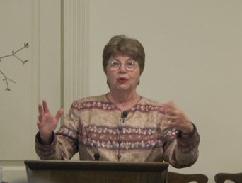

Our Spiritual Leader
Biography
After living in 35 different places in several States and in Scotland, Rev. Carol Landry settled in Huntsville in 2004. As the minister of Unity Church on the Mountain, she immediately became involved in Interfaith Mission Service, where she has served in a variety of positions including vice president of the board, a member of the Specialized Ministry Team, and headed up the One Huntsville creative team. She served as president of Huntsville Area Assoc. for Pastoral Care. These activities introduced her to the varied religious and cultural opportunities in this area and have given a visible presence for Unity.
A particular joy is officiating at weddings in the many interesting and beautiful locations around our area.
Carol is an artist and travels widely. In 2016 she attended the Parliament of World Religions held in Salt Lake City.
She recently became part of the program committee for the Jewish Christian Retreat she has attended for many years at Wild Acres in North Carolina each year.
Carol holds a BA in Religion and Philosophy and MA in Psychology; 3 years (many years ago) at Pacific Bible Seminary; is a Licensed Unity Teacher; and an ordained Independent Unity Minister.